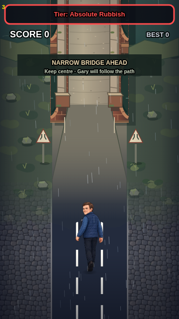

Gary Eats! — Asset Factory
Reusable geometry masks, camera profiles and transparent-art handoff. Review workspace, not automatic art approval or live asset registration.

Exactly 360 × 640 game units. All placement rectangles are screen-parallel. Imported artwork stays local to this browser.
1. Choose the asset
Repository screenshots are review captures, not approved first-biome style masters. Import the corrected original-biome PNG for style comparison.
2. Export controlled geometry
Attach the transparent template when generating art. The geometry must not be repainted or perspective-warped.
3. Import and validate ChatGPT artwork
Validates size, actual alpha, outside-mask pixels, foot baseline and safe padding. It cannot independently certify artistic projection, material fidelity or iPhone performance.
Open Manual Perspective Editor →
Adjust imported artwork's apparent height, skew or individual face corners. You will need to select the PNG again in the editor; originals stay on your device.
4. Real-engine review
Isolated debug view: actual game pass and layering, no collisions, production registration, saves or perspective approval.
5. Preview / evidence
Real engine inserts the candidate inside its selected rendering pass. This does not approve its art, modify collisions or register it for normal Play.